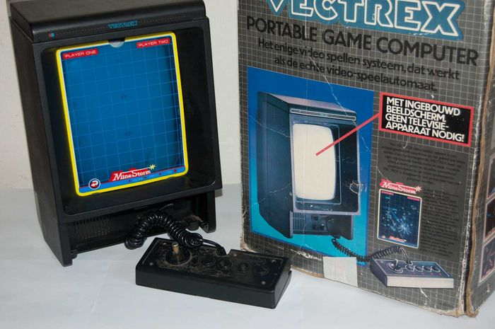
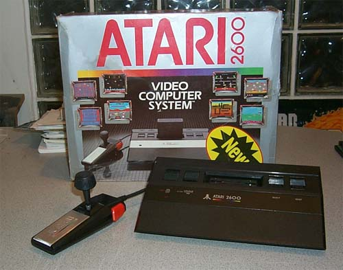

MB Vectrex
- Fabricante: MB (UE) / GCE (USA)
- Procesador: Motorola MC68A09 @ 1.5 MHz.
- Formato: Cartuchos.
- Librería de juegos: Unos 30 originales. La activa comunidad de fans han hecho crecer este número hasta más de 60, con producciones tan recientes como de 2011.
- Precio Original: 199$ en Estados Unidos.
- Ventas: Difíciles de calcular, pero menos de 500.000 en todo el mundo. En Europa fueron menos de 250.000.
Atari 2600 Jr.
- Fabricante: Atari
- CPU: MOS Technology 6507 @ 1,19 MHz.
- Procesador de audio y video: TIA. 160 x ~190 píxeles, 128 colores en pantalla pero con un máximo de 4 colores por línea; sonido monoaural de dos vías.
- Memoria de lectura y escritura (RAM): 128 octetos en la consola dentro del chip MOS Technology 6532, si bien algunos juegos pueden añadir hasta 256 octetos integrados en el cartucho.
- Memoria de sólo lectura (ROM): 4 KB por cartucho (o más de 32KB si el cartucho usa paginación de memoria).
- Entrada: controlada por el chip RIOT.
